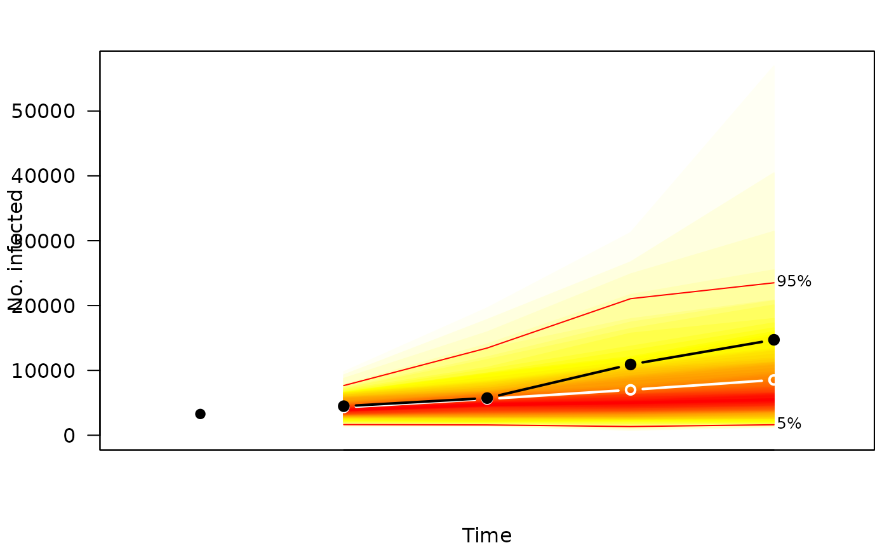
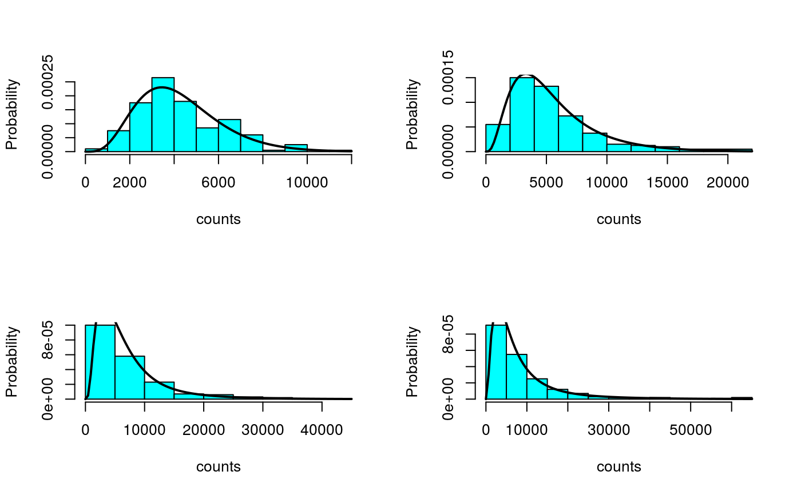

The function dhhh4sims constructs a (non-vectorized)
probability mass function from the result of
surveillance::simulate.hhh4() (and the corresponding
model), as a function of the time point within the simulation period.
The distribution at each time point is obtained as a mixture of
negative binomial (or Poisson) distributions based on the samples from
the previous time point.
dhhh4sims(sims, model)
| sims | a |
|---|---|
| model | the "hhh4" object underlying |
a function(x, tp = 1, log = FALSE), which takes a
vector of model$nUnit counts and calculates the
(log-)probability of observing these counts (given the
model) at the tp'th time point of the simulation
period (index or character string matching rownames(sims)).
logs_hhh4sims() where this function is used.
library("surveillance")#>#>#>CHILI.sts <- sts(observed = CHILI, epoch = as.integer(index(CHILI)), epochAsDate = TRUE) ## fit a simple hhh4 model (f1 <- addSeason2formula(~ 1, period = 365.2425))#> ~1 + sin(2 * pi * t/365.2425) + cos(2 * pi * t/365.2425)fit <- hhh4( stsObj = CHILI.sts, control = list(ar = list(f = f1), end = list(f = f1), family = "NegBin1") ) ## simulate the last four weeks (only 200 runs, for speed) sims <- simulate(fit, nsim = 200, seed = 1, subset = 884:nrow(CHILI.sts), y.start = observed(CHILI.sts)[883,]) if (requireNamespace("fanplot")) { plot(sims, "fan", fan.args = list(ln = c(5,95)/100), observed.args = list(pch = 19), means.args = list(type = "b")) }#>## derive the weekly forecast distributions dfun <- dhhh4sims(sims, fit) dfun(4000, tp = 1)#> [1] 0.0002194578dfun(4000, tp = 4)#> [1] 0.0001069622curve(sapply(x, dfun, tp = 4), 0, 30000, type = "h", main = "4-weeks-ahead forecast", xlab = "No. infected", ylab = "Probability")## compare the forecast distributions with the simulated counts par(mfrow = n2mfrow(nrow(sims))) for (tp in 1:nrow(sims)) { MASS::truehist(sims[tp,,], xlab = "counts", ylab = "Probability") curve(sapply(x, dfun, tp = tp), add = TRUE, lwd = 2) }